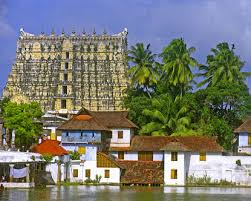
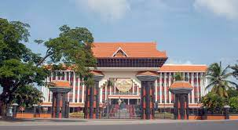
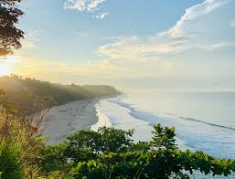

Thiruvananthapuram (or Trivandrum) is the capital of the southern Indian state of Kerala. It's distinguished by its British colonial architecture and many art galleries. It’s also home to Kuthira Malika (or Puthen Malika) Palace, adorned with carved horses and displaying collections related to the Travancore royal family, whose regional capital was here from the 18th–20th centuries. ― Google
Weather: 29°C, Wind W at 5 km/h, 77%
Humidity More on weather.com
Local time: Wednesday, 5:16 pm
Neighborhoods: East Fort, Vattiyoorkavu, Kazhakuttam, MORE
Area code: +91-(0)471
Climate: Am/Aw (Köppen)
Demonym(s): Trivandrumite, Trivian
District: Thiruvananthapuram
|  |  | |
 |
| Sree Padmanabhaswamy Temple | Capital of Kerala State | Trivandrum City | Varkala Beach |